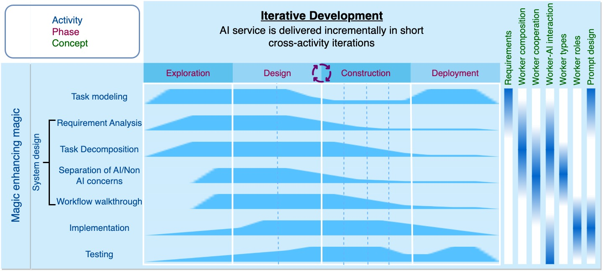

Rapid Prototyping Process
Promptmanship: process, concepts, activities, and patterns
With no need for complex data engineering (although a small number of prompt examples is often required) and model training, foundation models coupled with prompt-based AI chains can support rapid development of AI services. This makes rapid application development (RAD) style methodologies highly applicable to AI chain development, as RAD emphasizes rapid prototyping and iterative delivery.
Considering that AI chain's requirements analysis, design, implementation, and testing are parallel and have no clear boundaries, we propose an AI chain process model similar to Rational Unified Process (RUP). RUP emphasizes identifying and addressing risks early in the project life cycle, which is beneficial for embedding RAI principles and risks in the AI chain process model in the future.
AI chain process consists of four phases: exploration, design, construction, and deployment.
- Exploration develops an approximate vision of the task, requirements, model capabilities, and prompt effectiveness through the conversation between human and a large language model (e.g., ChatGPT), which establishes the context for AI chain design and development. This phase is mainly supported by the Exploration view in the Sapper IDE.
- Design involves designing the AI chain system skeleton built on the understanding and experience gained from exploration. System design can deepen the understanding of the task, clarify and refine task requirements, provide the skeleton for the AI chain and explore its feasibility. This phase is mainly supported by the Design view in the Sapper IDE.
- Construction involves building, running, and debugging the AI chain through no-code programming methods. The initial AI chain can be automatically assembled based on the AI chain skeleton from system design, minimizing the time and effort required for manual construction from scratch. The execution results of the AI chain and its individual prompts can further deepen the understanding of the task and provide feedback for adjusting the overall design of the AI chain and revising individual prompts. This phase is mainly supported by the Block view in the Sapper IDE.
- Deployment involves one-click deployment of AI services in the form of web services that can be integrated into the end user’s workflow. The real-world usage and feedback from end-users can be used to evolve and upgrade the AI chain. This phase is mainly supported by the Project Management in the Sapper IDE and by the AI chain marketplace.
AI chain engineering activities involve task modeling, system design (requirement analysis, task decomposition, separating AI and non-AI concerns, task workflow walk-through), AI chain implementation (prompt design), AI chain testing, and the co-pilot activity magic enhancing magic.
In the above figure, the bar next to an activity indicates the start and end of the activity, and the bar height indicates the intensity of the activity. We can see that each phase has focused (more intense) activities, but they all involve other activities to some extent (less intense). Therefore, the AI chain development process has both iterative and parallel characteristics.